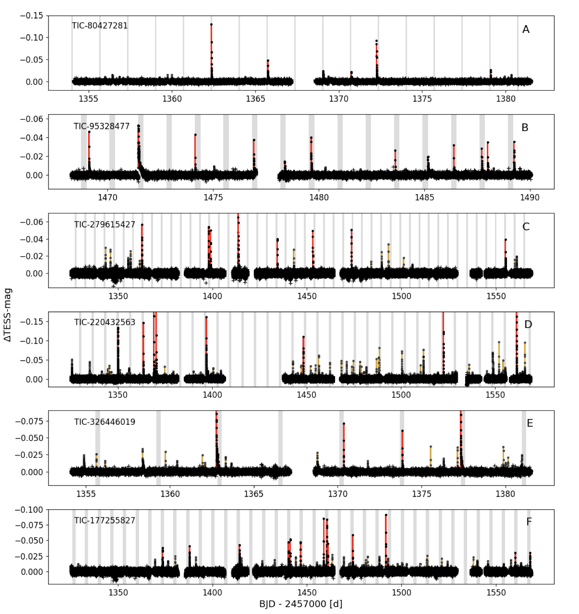
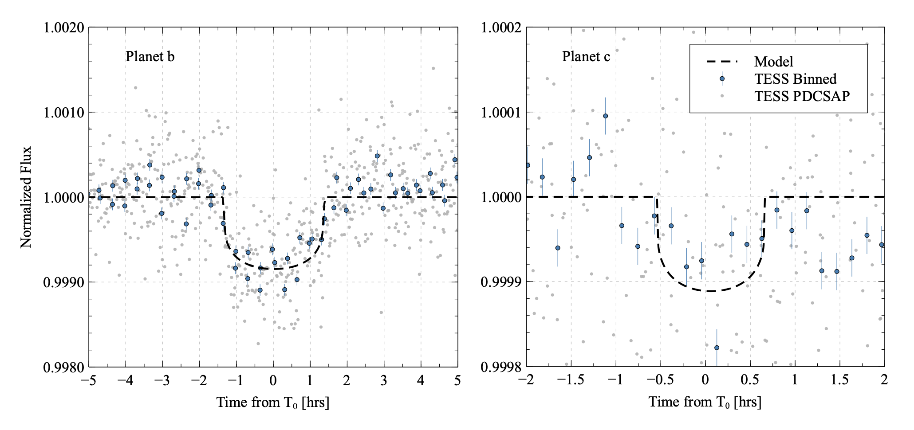

STATUS UPDATE: Orbit 1 of Sector 40 is now available to download as a TICA product from MAST
Welcome TESS followers to this weeks news bulletin. This week we are looking at three papers from the archive,
EvryFlare IV: Detection of periodicity in flare occurrence from cool stars with TESS (Howard et. al., 2021) :
The periodic occurrence of stellar flares may used as a probe into electromagnetic star-planet interaction (SPI), binary interaction, or magnetic conditions in spots. In this paper the authors utilize high-cadenced two minute TESS data in order to study a sample of 284 cool stars and their flare periodograms. Using these data the authors seek to identify periodicity due to magnetic interactions with orbiting companions, magnetic reservoirs, or due to rotational phase.
Taking this large sample of stars, periods from 1-10 days are searched for using newly developed periodograms. These periodograms are a new Bayesian likelihood periodogram and a modified Lomb-Scargle periodogram, and been constructed by the authors to better account for phased flaring.
The paper finds six candidates with a false alarm probability below 1%, three targets are grater than 3-sigma detections of flare periodicity; the others are plausible candidates which cannot be individually confirmed. See the paper for more information.
Directly Determined Properties of HD 97658 from Interferometric Observations (Ellis et. al., 2021) :
HD 97658 is host to a super-Earth known as HD 97658 b, utilizing interferometric observations taken by the CHARA Array, the authors measure the hosts limb-darkened angular diameter to be θLD = 0.314 mas. Combining this measurement with the Gaia EDR3 parallax value (with the zero-point correction) yields a stellar radius of 0.728 R⊙.
The bolometric flux of the star is measured as 2.42 ± 0.05 × 10-8 erg s-1 cm-2, and the effective temperature derived as 5212 K, these values agree with previous estimates based on spectroscopy.
The authors go on to use their derived measurements in combination with stellar evolution models and transit properties to determine the age of the system and constrain the properties of the planet.
TESS observed the system during Sector 22 for approximately 23 days, with a two minute cadence. Using the PDCSAP_Flux the authors evaluated the time-series for signs of rotation due to star-spots passing in and out of the field of view. They found that the average brightness of HD 97658 is stable with a RMS of 385 ppm, and so no evidence of long-term variability due to spots during the observation period. This conclusion is consistent with TESS observation period being shorter than the derived rotation period of 34 days (Guo et al. 2020).
The TESS data were also used to search for transits via a Box Least-Squares periodogram. This allowed for the detection of the super-Earth HD97658 b, with an approximate period of 9.474 d. These data were combined with that from EXOFASTv2 to derive several additional planet parameters such as the radius 2.12 R⊕, effective temperature 750 K, and mass 7.5 M⊕.
The TESS and EXOFASTv2 data also revealed a potential additional planet. Please see the paper for more information about this system.
TOI-1749: an M dwarf with a Trio of Planets including a Near-Resonant Pair (Fukui et. al., 2021) :
In this paper the authors report on the discovery of a super-Earth, TOI-1749b, and two sub-Neptunes TOI-1749c and TOI-1749d, all transiting an early M dwarf star at a distance of 100 pc. All planets were discovered using TESS data, and confirmed using ground-based measurements.
The authors find that TOI-1749b, c, and d have orbital periods of 2.39, 4.49, and 9.05 days, and radii of 1.4, 2.1, and 2.5 R⊕, respectively. They also place 95\% confidence upper limits on the masses of the planets with estimates of 57, 14, and 15 M⊕ for TOI-1749b, c, and d, respectively, derived via transit timing variations.
Based on the parameters derived, the authors hypothesize that all three planets initially had a hydrogen envelope on top of a rocky core, and only the envelope of the innermost planet has been stripped away by photo-evaporation and/or core-powered mass loss mechanisms. Please see this paper for more information.

Fig. 1: Taken from Howard et. al., (2021). TESS Cycle 1 light curves of the 6 candidate phased-flares targets with FAP<1%. Periodicity from these flare stars was detected with the authors newly-developed flare periodograms. Flares large enough to comprise the phased-flares signal (i.e. with amplitudes above the threshold amplitude Athresh) are highlighted in red. Smaller flares are highlighted in light orange. Predicted times when high-amplitude flares will occur are shaded in grey. Out-of-flare variability in the light curve is de-trended with a Savitsky-Golay filter. Some phased-flare targets are stronger detections than others, with A and B as the clearest.

Fig. 2: Taken from Ellis et. al., (2021). All of the TESS photometry is shown as transparent grey points. The folded and 10 minute binned TESS photometry with associated errors are shown as blue points. The transit models from EXOFASTv2 are the dashed black line. Left: The best fit model for planet b with period 9.4896 days. Right: The EXOFASTv2 transit model for the planet candidate “c” identified in Figure 5 of the paper with a period 1.054 days is shown as the blue dashed line.